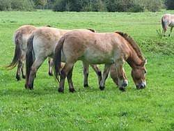

Zirgi ir zirgu dzimtas ģints, kas apvieno zirgus, ēzeļus un zebras. Tos sauc par nepārnadžiem, tāpēc ka viņu
ekstremitātēm ir attīstīts viens pirksts (trešais).
Kopā ar tuvākajiem radiniekiem degunradžiem un tapiriem zirgus ierindo nepārnadžu kārtā. Zirgu dzimtas dzīvnieki
barojas ar zāli un krūmiem, dzīvo
klajās vietās un ātri skrien, lai varētu aizbēgt no plēsējiem. Visi zirgu dzimtas pārstāvji ir ļoti sabiedriski
dzīvnieki, dzīvo ģimenēs un apvienojas
baros, dienas laikā veic lielus attālumus, meklēdami barību un ūdeni, vai arī lai paglābtos no kukaiņiem.

Zirgu šķirnes
Jāšanas veidi
Popolārākie jātnieki&zirgi